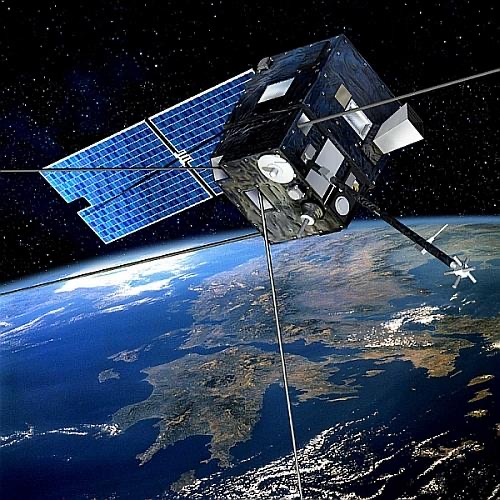
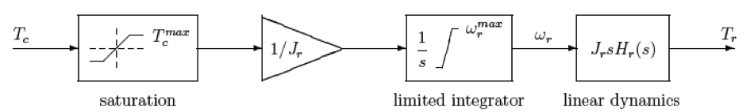
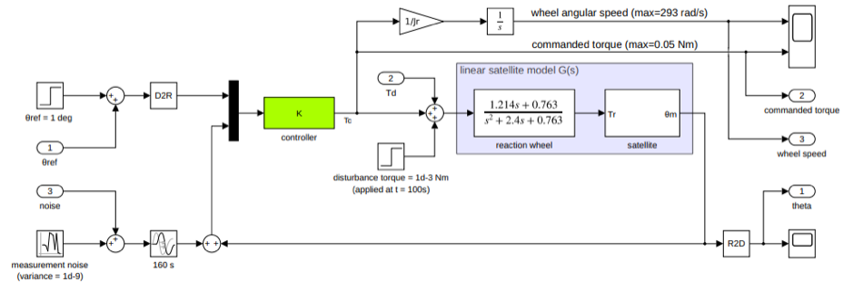
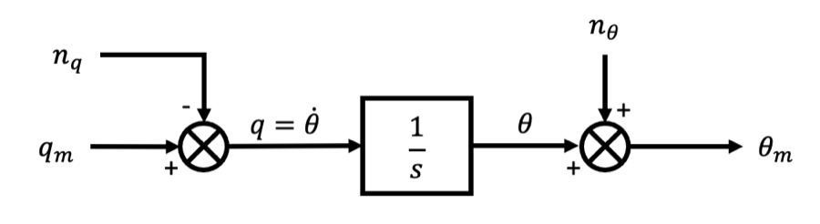
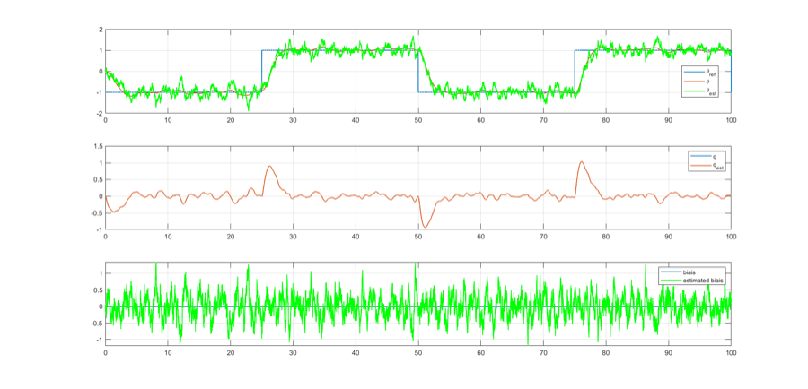
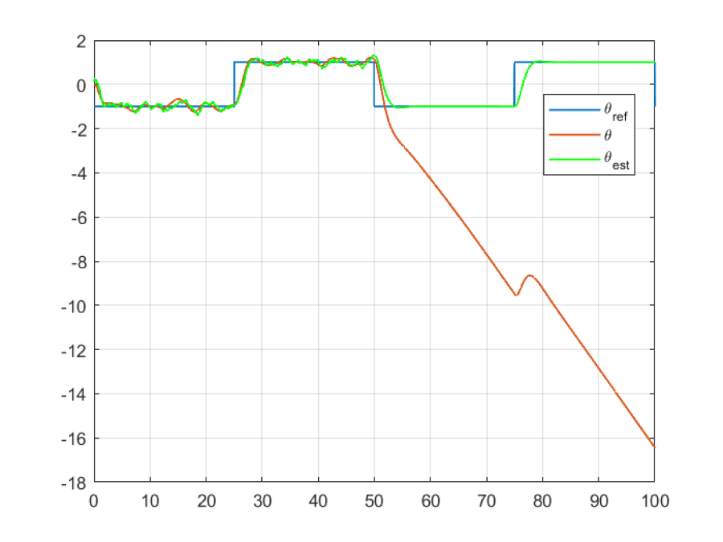
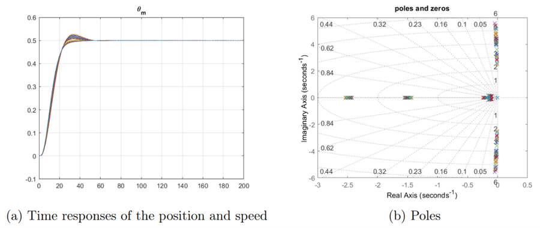
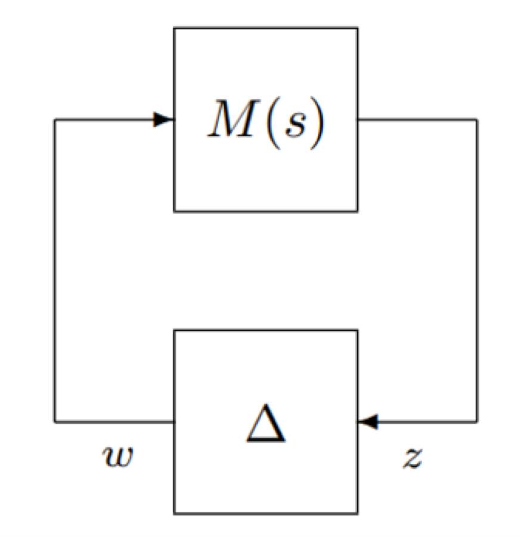

Coursework · ISAE-SUPAERO / ONERA
Attitude control and estimation for a flexible micro-satellite
This brings together two pieces of coursework that belong to the same problem: designing the controller, and designing the estimator that feeds it. Separating them makes neither make much sense — a pointing controller is only as good as the attitude estimate it acts on.
The satellite

DEMETER was a CNES micro-satellite launched in 2004 to investigate ionospheric disturbances linked to seismic and volcanic activity — it detected a substantial surge in ultra-low-frequency radio waves before the 2010 Haiti earthquake. Structurally it is a central body with solar panels and four flexible appendices at different orientations, which is what makes the control problem interesting: the science mode demands precise pointing from a structure that bends.
Part 1 — Modelling and control
The open-loop model integrates the flexible satellite dynamics with actuator, sensor and estimator models, so the controller is designed against the system as it actually behaves rather than a rigid-body idealisation.


Three controller structures were synthesised and compared:
- PID via modal control — gains placed to give the closed loop a chosen natural frequency and damping.
- Full-order \(H_\infty\) — optimal but high-order, and not what you want to fly.
- Structured \(H_\infty\) — the same robustness objectives constrained to a fixed, implementable controller structure.
Large pointing errors
For a large slew, a linear controller wastes reaction-wheel effort. A nonlinear law drives the error down more economically:
\[ T_c^{NL} = k\left(\dot{\theta}_d \times \operatorname{sign}(\theta_{ref} - \theta_m) - \dot{\theta}_e\right) \]It reaches a 20° target in about 120 s — but leaves undamped oscillations at steady state. The fix is a switching strategy: run the nonlinear law while the error is large, then hand over to the modal controller \(T_c = K_P(\theta_{ref}-\theta_m) - K_D\dot{\theta}_e\) near the target. Each law is used only where it is good, and the limit cycle disappears.
Reaction wheel desaturation
A persistent disturbance eventually saturates the reaction wheel, at which point the delivered torque goes to zero and the satellite is no longer controlled — it diverges under the disturbance. Unloading needs a second actuator, and magnetorquers win over thrusters: lightweight, reliable, and propellant-free, so they work indefinitely as long as the solar panels supply power. Anti-windup control handles the saturation itself.
Part 2 — Gyro-stellar estimation
The controller assumes it knows the attitude. It does not — it has a gyro, which is precise but drifts, and a star tracker, which is absolutely accurate but slow and noisy. A Kalman filter fuses them so each covers the other's weakness.

Starting analytically, the first-order continuous model treats the measured rate as the input and the star tracker as the measurement:
\[ \dot{\theta} = q_m - n_q, \qquad \theta_m = \theta + n_\theta \]The steady-state Riccati equation then gives the optimal gain in closed form. With \(\dot{P} = 0\):
\[ \dot{P}(t) = -\frac{P^2(t)}{v^2} + w_q^2 \;\Longrightarrow\; P = v\,w_q \]taking the positive root because \(P\) is a variance. The filter was then extended to a second-order model, discretised at \(T_s = 0.025\) s with the star tracker running \(N = 10\) times slower, and implemented in MATLAB/Simulink.


Two results worth keeping. Gyro bias is not a nuisance, it is a failure mode — if the filter does not model it, the output never reaches the commanded value and a steady offset persists. And the star-tracker loss test is the real justification for hybridization: with the absolute reference gone, the estimate survives on integrated gyro rate, degrading gracefully instead of failing.
Validation
Stability and performance were checked by simulation and by μ-analysis over an uncertain parameter set — the flexible modes of a structure like this are not known exactly, so a controller that only works at nominal parameters is not a controller you would fly.

